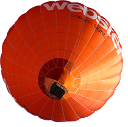

Açýklamanýn Zeminsiz Resmi Dairesel Sarmasý
Paragraf
img { float: left; /* right; */ shape-outside: circle(50%);} /* 30%; 90%; border-box */
<div class="kab">  <!-- balon2.png, firefox4.png --> <div>1782 yýlýnýn kasým ayýnda bir gece, hikayemiz böyle baþlýyor, küçük bir Fransýz kasabasý olan Annonay'daki bir evde, beyaz bacasýndan gri dumanlarýn gökyüzüne kývrýlarak yükseldiði bir evde, kaðýt-imalatý ticaretiyle uðraþan bilimsel araþtýrmalar meraklýsý iki kardeþ: Stephan ve Joseph Montgolfier'lerin nice tarihi bir icat olacak olan balonla gökyüzü uçuþunu tasarladýklarý, binlerce kasaba halký tarafýndan henüz bilinmemekteydi. Bu icat geleceðin modern uçaklarýnýn ilk prototipini oluþturacaktý.</div> </div>